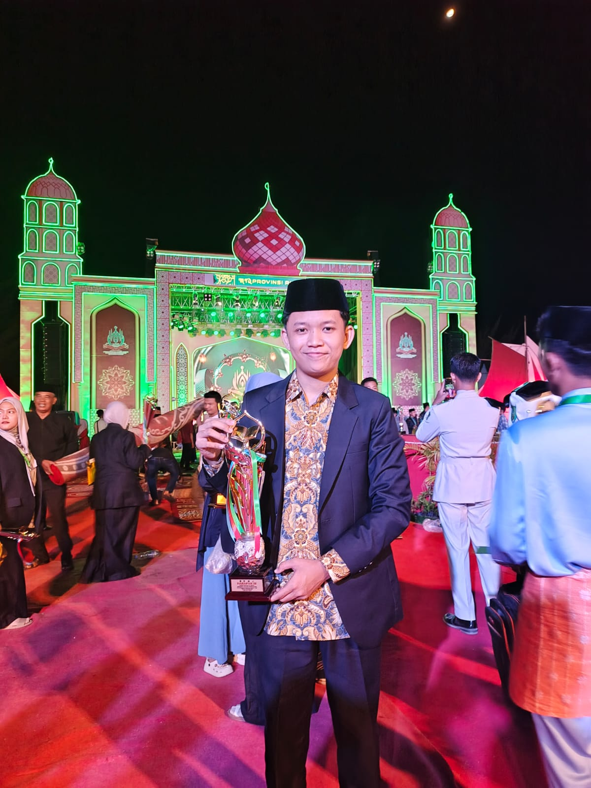

Jadwal Kajian
Informasi jadwal kajian akan diumumkan melalui pengurus Masjid Baiturrahman.
Informasi MasjidPusat ibadah, pembelajaran Al-Qur'an, silaturahmi, dan kemaslahatan umat di Tuah Madani, Pekanbaru, Riau.
Lihat Jadwal SalatMengenal imam yang memimpin ibadah di Masjid Baiturrahman

Imam Tetap Masjid Baiturrahman
Bertugas memimpin pelaksanaan salat berjamaah serta berkontribusi dalam menjaga kegiatan ibadah dan kehidupan keagamaan di lingkungan Masjid Baiturrahman.
Tempat ibadah dan kegiatan masyarakat
Masjid Baiturrahman merupakan pusat ibadah dan kegiatan keislaman yang berlokasi di Perumahan Surya Graha, Kelurahan Sidomulyo Barat, Kecamatan Tuah Madani, Kota Pekanbaru, Riau. Masjid ini hadir sebagai tempat bagi umat Islam untuk melaksanakan ibadah, memperdalam ilmu agama, serta mempererat tali silaturahmi dan ukhuwah Islamiyah antarjamaah.
Sebagai bagian dari kehidupan masyarakat, Masjid Baiturrahman tidak hanya berfungsi sebagai tempat pelaksanaan salat berjamaah, tetapi juga menjadi wadah pembinaan keagamaan dan pengembangan kecintaan terhadap Al-Qur’an. Berbagai kegiatan dilaksanakan untuk mendorong jamaah agar senantiasa mendekatkan diri kepada Allah SWT serta menjadikan nilai-nilai Islam sebagai pedoman dalam kehidupan sehari-hari.
Salah satu kegiatan yang dilaksanakan adalah pembelajaran tilawah Al-Qur’an setiap hari Kamis, Jumat, dan Sabtu setelah salat Isya. Kegiatan ini menjadi sarana bagi jamaah untuk mempelajari dan meningkatkan kemampuan membaca Al-Qur’an dengan baik, memperbaiki kualitas bacaan, serta menumbuhkan kecintaan terhadap kalam Allah SWT. Selain itu, kegiatan pendidikan Al-Qur’an juga menjadi bagian dari upaya membangun generasi yang dekat dengan Al-Qur’an.
Masjid Baiturrahman juga menyelenggarakan kegiatan dalam rangka memperingati hari-hari besar Islam, seperti Tahun Baru Islam, Maulid Nabi Muhammad SAW, dan peringatan Isra Mikraj. Kegiatan tersebut menjadi momentum untuk meningkatkan pemahaman keislaman, meneladani akhlak Rasulullah SAW, serta memperkuat kebersamaan dan kepedulian antarjamaah.
Melalui berbagai kegiatan ibadah, pendidikan Al-Qur’an, dan aktivitas kemasyarakatan, Masjid Baiturrahman berupaya menjadi masjid yang aktif, terbuka, dan memberikan manfaat bagi masyarakat sekitar. Dengan semangat kebersamaan dan nilai-nilai keislaman, Masjid Baiturrahman diharapkan dapat terus berperan dalam membangun lingkungan yang religius, harmonis, dan berakhlak mulia.
Tuah Madani, Pekanbaru, Riau
Memuat tanggal...
Mengambil jadwal salat...
--:--
--:--
--:--
--:--
--:--
Dokumentasi kegiatan Masjid Baiturrahman
Informasi dan agenda Masjid Baiturrahman
Informasi jadwal kajian akan diumumkan melalui pengurus Masjid Baiturrahman.
Informasi MasjidInformasi kegiatan gotong royong dan kebersihan masjid dapat diperbarui pada bagian ini.
Informasi MasjidPengumuman kegiatan keagamaan dan agenda Masjid Baiturrahman lainnya.
Informasi MasjidAyat Al-Qur'an dan hadis tentang pentingnya menjaga salat dalam kehidupan seorang Muslim.
إِنَّ الصَّلَاةَ كَانَتْ عَلَى الْمُؤْمِنِينَ كِتَابًا مَوْقُوتًا
"Sesungguhnya salat itu merupakan kewajiban yang waktunya telah ditentukan atas orang-orang yang beriman."
QS. An-Nisa' [4]: 103
إِنَّ الصَّلَاةَ تَنْهَىٰ عَنِ الْفَحْشَاءِ وَالْمُنْكَرِ
"Sesungguhnya salat itu mencegah dari (perbuatan-perbuatan) keji dan mungkar."
QS. Al-'Ankabut [29]: 45
Rasulullah ﷺ mengumpamakan salat lima waktu seperti sungai di depan rumah yang digunakan untuk mandi lima kali sehari; tidak tersisa kotoran pada tubuhnya. Demikian pula Allah menghapus kesalahan melalui salat lima waktu.
HR. Sahih al-Bukhari no. 528
حَافِظُوا عَلَى الصَّلَوَاتِ وَالصَّلَاةِ الْوُسْطَىٰ
"Peliharalah semua salat dan salat wusta. Laksanakanlah salat karena Allah dengan khusyuk."
QS. Al-Baqarah [2]: 238
Sumber Al-Qur'an dan hadis dicantumkan untuk membantu jamaah mempelajari dalil lebih lanjut.
Informasi dan pesan untuk pengurus masjid
Lokasi: Tuah Madani, Pekanbaru, Riau
Silakan hubungi pengurus masjid secara langsung untuk informasi kegiatan dan layanan masjid.